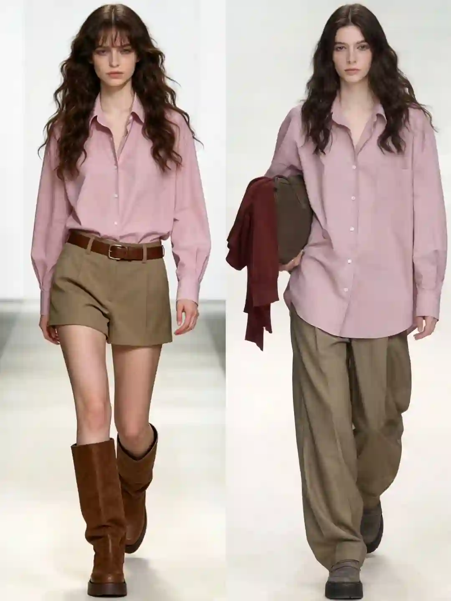
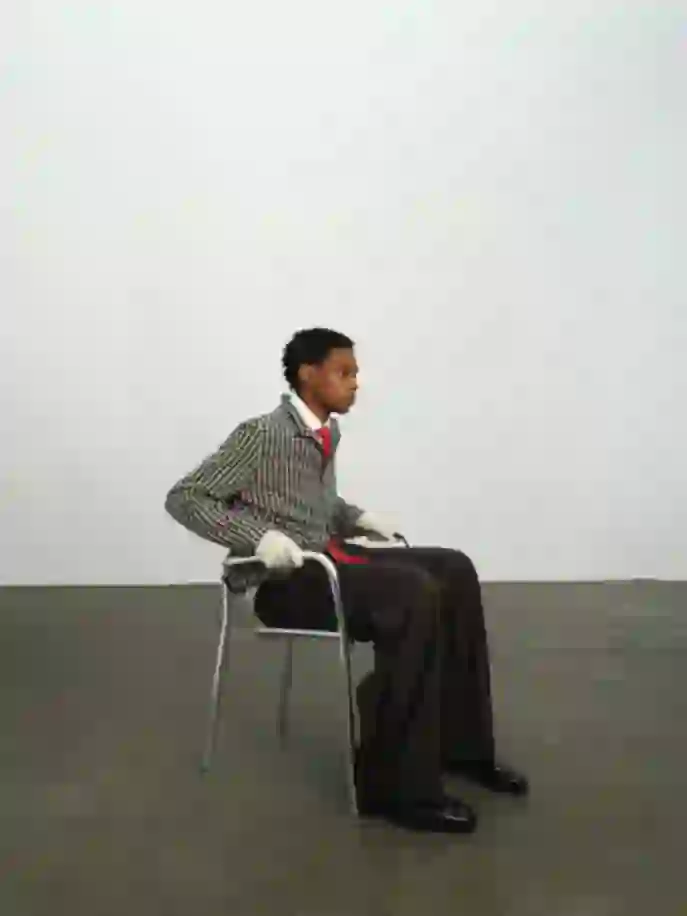
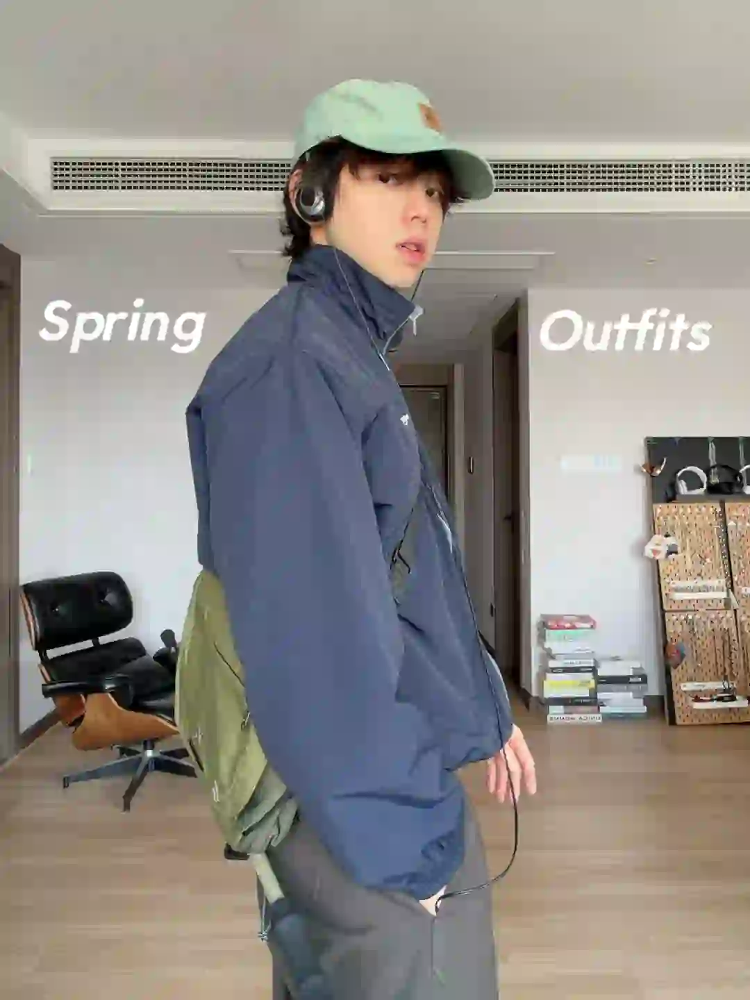
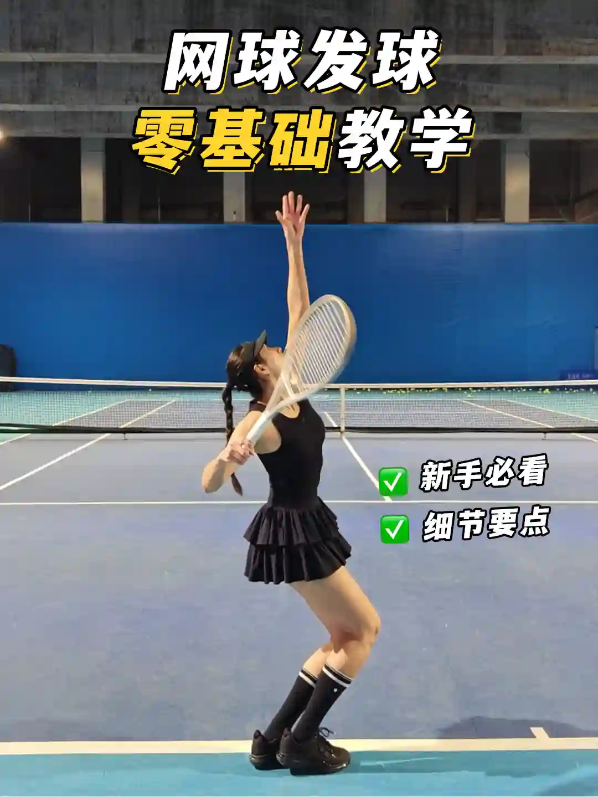
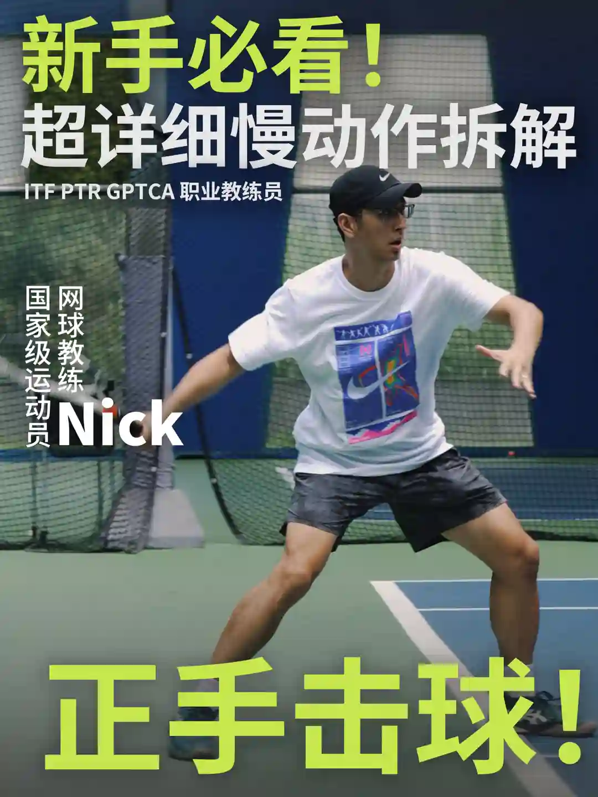

2026年5月9日
05月09日报告
生成时间：2026-05-09 · 范围：时尚 / 穿搭 / 网球
今日参考账号：my -mame-is-YY / Adrianaloh / 影像实验室
今日高信号标题：世界上最高级感的配色 | 舒服系穿搭 ｜ 好莱坞新生代顶男穿搭教科书？Jacob Elordi！ ｜ 高级感是怎么产生的
竞品策略变化：未命中监控竞品样本
今日高信号标题：世界上最高级感的配色 | 舒服系穿搭 ｜ 好莱坞新生代顶男穿搭教科书？Jacob Elordi！ ｜ 高级感是怎么产生的
竞品策略变化：未命中监控竞品样本

时尚 · 01
世界上最高级感的配色 | 舒服系穿搭
⭐ 4789
👍 8444
今天可学
- 内容结构：人物 + 4图，更像单点表达
- 收藏效率高，说明用户把它当成可复用模板/知识卡，不只是刷到即过
- 标签聚焦：#小红书RFL时尚轻单 / #时尚是轮回 / #复古穿搭 / #高级感穿搭
时尚 · 02
好莱坞新生代顶男穿搭教科书？Jacob Elordi！
⭐ 1978
👍 4483
今天可学
- 内容结构：视频封面 + 视频，更像视频示范/单点表达
- 这条流量带有明显外部加成，只拆内容结构与包装，不原样复制流量来源
- 评论活跃，适合加入观点冲突、对比案例或常见误区来拉讨论
- 正文入口：今天的主人公绝不止有外形优越，穿搭经亦是很有一套～ 他的私服风格偏质感简约街潮，却有一丝潮湿阴郁的古典美，很会用各种时髦时装品牌的包包配饰，性别模糊，色彩混搭高手一枚～ ▫️ 看完…
- 标签聚焦：#Adrianaloh / #jacobelordi / #帅哥 / #男生穿搭
时尚 · 03
高级感是怎么产生的
⭐ 2044
👍 2363
今天可学
- 内容结构：未判定 + 0图，更像单点表达
- 收藏效率高，说明用户把它当成可复用模板/知识卡，不只是刷到即过
- 正文入口：（正文为空或未取到）

时尚 · 04
40+男人的终极指标，拿捏好高级感
⭐ 850
👍 1247
今天可学
- 内容结构：未判定 + 4图，更像单点表达
- 收藏效率高，说明用户把它当成可复用模板/知识卡，不只是刷到即过
- 评论活跃，适合加入观点冲突、对比案例或常见误区来拉讨论
- 标签聚焦：#英伦风 / #男士穿搭技巧 / #男士穿搭 / #绅士的品格

时尚 · 05
Video for COMMON/DIVISOR Vol.7
⭐ 471
👍 602
今天可学
- 内容结构：视频封面 + 视频，更像视频示范/单点表达
- 这条流量带有明显外部加成，只拆内容结构与包装，不原样复制流量来源
- 正文入口：DIVISOR with HERETUI ,{
- 标签聚焦：#时尚短片 / #LOOKBOOK拍摄 / #品牌拍摄 / #视觉审美积累
时尚赛道今日方法论
- 样本依据：世界上最高级感的配色 | 舒服系穿搭 / 高级感是怎么产生的
- 当天结构信号：视频封面封面 + 4图 最强；优先学习样本 3 条，低收藏流量样本 0 条。
- 时尚赛道今天跑出来的是“审美判断 + 资料感整理”：像 高级感是怎么产生的 这类高收藏样本，核心不是讲步骤，而是把趋势、风格线索和案例并排给足，用户才愿意以 86.5% 的收藏率反复回看。
- 执行建议：标题先抛出趋势/风格判断，再给明确收益；正文少讲空泛氛围，多给风格标签、对照案例和可复看的视觉结论，让内容更像灵感资料卡。
- 风险提醒：好莱坞新生代顶男穿搭教科书？Jacob Elordi！ 已标记为 [不可复制]，只拆结构，不作为明日选题原样跟进。
今日参考账号：GAYI今天穿什么 / 查理叔叔 / Shanghai sights
今日高信号标题：自带凌乱感的流浪绅士——Alon ｜ 👨🏻40+叔叔｜5套男生穿搭学会蓝色搭卡其色 ｜ 上海秋冬男士街拍年度18图（秋冬篇）
竞品策略变化：未命中监控竞品样本
今日高信号标题：自带凌乱感的流浪绅士——Alon ｜ 👨🏻40+叔叔｜5套男生穿搭学会蓝色搭卡其色 ｜ 上海秋冬男士街拍年度18图（秋冬篇）
竞品策略变化：未命中监控竞品样本
穿搭 · 01
自带凌乱感的流浪绅士——Alon
⭐ 2542
👍 5511
今天可学
- 内容结构：未判定 + 0图，更像单点表达
- 收藏效率高，说明用户把它当成可复用模板/知识卡，不只是刷到即过
- 正文入口：（正文为空或未取到）
穿搭 · 02
👨🏻40+叔叔｜5套男生穿搭学会蓝色搭卡其色
⭐ 1177
👍 1659
今天可学
- 内容结构：人物 + 0图，更像单点表达
- 收藏效率高，说明用户把它当成可复用模板/知识卡，不只是刷到即过
- 正文入口：（正文为空或未取到）

穿搭 · 03
上海秋冬男士街拍年度18图（秋冬篇）
⭐ 626
👍 2831
今天可学
- 内容结构：人物 + 18图，更像资料型合集
- 收藏效率高，说明用户把它当成可复用模板/知识卡，不只是刷到即过
- 评论活跃，适合加入观点冲突、对比案例或常见误区来拉讨论
- 标签聚焦：#城市氛围感穿搭 / #ootd每日穿搭 / #上海街拍 / #街拍穿搭

穿搭 · 04
早春穿搭🍃3套日系少年感looks
⭐ 438
👍 1136
今天可学
- 内容结构：视频封面 + 视频，更像视频示范/单点表达
- 收藏效率高，说明用户把它当成可复用模板/知识卡，不只是刷到即过
- 评论活跃，适合加入观点冲突、对比案例或常见误区来拉讨论
- 正文入口：好久没在家里拍穿搭了 悄悄地买了很多春装 （准备惊艳你们🖖） 进入疯狂拍摄模式 想看什么风格的plq留言 By the way，杭州有没有好的房子出租 请疯狂at我🫡🫡🫡
- 标签聚焦：#早春穿搭 / #男生穿搭 / #ootd每日穿搭 / #日系少年感
穿搭 · 05
高智感穿搭的三个细节
⭐ 348
👍 787
今天可学
- 内容结构：视频封面 + 视频，更像视频示范/单点表达
- 收藏效率高，说明用户把它当成可复用模板/知识卡，不只是刷到即过
- 正文入口：它绝不是一场cosplay， 是一种内敛的秩序感和精准的自我认知， 最终是选择那些让你忘记衣服本身， 专注于思考、创造和生活的智慧单品。 它是你本身智慧的延伸。#高智感 #高智感穿…
- 标签聚焦：#高智感 / #高智感穿搭 / #知识分子风 / #Loomis
穿搭赛道今日方法论
- 样本依据：自带凌乱感的流浪绅士——Alon / 👨🏻40+叔叔｜5套男生穿搭学会蓝色搭卡其色
- 当天结构信号：人物封面 + 0图 最强；优先学习样本 5 条，低收藏流量样本 0 条。
- 穿搭赛道今天最有效的是“整套可抄作业方案”：高收藏样本 👨🏻40+叔叔｜5套男生穿搭学会蓝色搭卡其色 说明，只要场景清楚、look 数量够多、搭配结果一眼能看懂，就更容易拿到 70.9% 级别的收藏反馈。
- 执行建议：优先做通勤/职业/一周不重样/套装盘点这类清单式内容；封面先给完整上身结果，图组里再拆单品变化和搭配理由，不要只发单套氛围图。
今日参考账号：打网球的皮卡邱 / 网球gogogo / 迈兹🎾Nick
今日高信号标题：零基础发球教程🎾高效训练，少走弯路 ｜ 网球标准：德约科维奇-正手慢动作分析！ ｜ 正手击球，7个慢动作拆解｜从底线到中场
竞品策略变化：未命中监控竞品样本
今日高信号标题：零基础发球教程🎾高效训练，少走弯路 ｜ 网球标准：德约科维奇-正手慢动作分析！ ｜ 正手击球，7个慢动作拆解｜从底线到中场
竞品策略变化：未命中监控竞品样本

网球 · 01
零基础发球教程🎾高效训练，少走弯路
⭐ 9114
👍 7586
今天可学
- 内容结构：视频封面 + 视频，更像视频示范/单点表达
- 收藏效率高，说明用户把它当成可复用模板/知识卡，不只是刷到即过
- 正文入口：网球发球全流程细节讲解 新手进阶都适合 发球是网球技术中比较难的一项 但自己就可以练好 循序渐进，一定会有进步 一起加油吧～
- 标签聚焦：#网球教学 / #网球发球 / #网球发球零基础教学 / #网球皮卡邱

网球 · 02
网球标准：德约科维奇-正手慢动作分析！
⭐ 7314
👍 8197
今天可学
- 内容结构：视频封面 + 视频，更像视频示范/单点表达
- 这条流量带有明显外部加成，只拆内容结构与包装，不原样复制流量来源
- 正文入口：最适合业余选手学习的网球动作~#网球 #网球教学 #德约科维奇 #国庆节 #WTT中国大满贯 #网球中国赛季来了 #上海大师赛 #球类运动日常 #打球 #人生的意义
- 标签聚焦：#网球 / #网球教学 / #德约科维奇 / #国庆节

网球 · 03
正手击球，7个慢动作拆解｜从底线到中场
⭐ 2822
👍 2409
今天可学
- 内容结构：视频封面 + 视频，更像视频示范/单点表达
- 收藏效率高，说明用户把它当成可复用模板/知识卡，不只是刷到即过
- 正文入口：正手击球是网球里最常用、最关键的技术之一！不同位置、不同来球，站位方式有所不同。 今天用 7️⃣ 个慢动作拆解，帮你从底线到中场、从浅球到深球，一次学会正手击球！ ⸻ ① 关闭式正…
- 标签聚焦：#网球 / #网球热土 / #网球教学 / #网球尖子生
网球 · 04
5.0定点直线｜快点！快点！在快点！🎾
⭐ 1187
👍 4796
今天可学
- 内容结构：未判定 + 0图，更像单点表达
- 收藏效率高，说明用户把它当成可复用模板/知识卡，不只是刷到即过
- 评论活跃，适合加入观点冲突、对比案例或常见误区来拉讨论
- 正文入口：（正文为空或未取到）

网球 · 05
attack tennis 🎾
⭐ 969
👍 4454
今天可学
- 内容结构：视频封面 + 视频，更像视频示范/单点表达
- 收藏效率高，说明用户把它当成可复用模板/知识卡，不只是刷到即过
- 标签聚焦：#tennis / #rf / #テニス / #网球
网球赛道今日方法论
- 样本依据：零基础发球教程🎾高效训练，少走弯路 / 正手击球，7个慢动作拆解｜从底线到中场
- 当天结构信号：视频封面封面 + 视频 最强；优先学习样本 4 条，低收藏流量样本 0 条。
- 网球赛道今天胜出的不是热闹球场感，而是“动作纠错/装备收益/新手可执行”：高收藏样本 零基础发球教程🎾高效训练，少走弯路 证明，只要用户能马上拿去练，收藏率就能来到 120.1%。
- 执行建议：标题写清动作部位、错误修正或装备收益；内容里给慢动作、步骤和上场场景。明星/赛事样本只借包装，不把热点本身当方法论。
- 风险提醒：网球标准：德约科维奇-正手慢动作分析！ 已标记为 [不可复制]，只拆结构，不作为明日选题原样跟进。
- 自动抽取规则：仅收录收藏率 >20% 且未被标记为 [不可复制] 的标题模板
- 写入目标：/Users/zhangxiaosong/shared/context/xhs-knowledge/topics/title-templates.md
- 把今天高收藏、高可复制的打法优先塞进明日发帖计划
- 竞品若连续两天从展示型转向教程/资料型，单独开策略变更记录
- 对被标注 [不可复制] 的样本，只拆结构，不抄流量来源